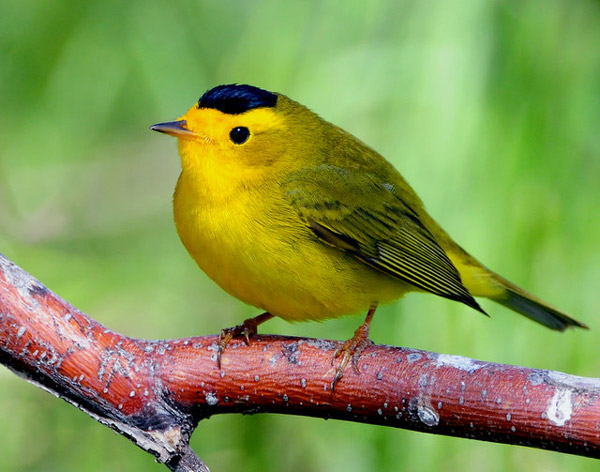

Yellow Warbler
The Yellow Warbler although small is one of the wisest birds in the world. With an exceptional wisdom to handle the eggs of the cowbird which is a big problem for other birds,the yellow warbler stands out among other birds.
- Scientific Name: Petechia
- Average Length: 14cm
- Average Lifespan: Riparian
- Habitat: 9 years
The cowbird is a bird which keeps its eggs among the eggs of other birds. When incidentally discovered by the other host bird and it removes these eggs or destroys it, the cowbird comes at times they are not present and destroys all its eggs. This cowbird palaver is a headache for most birds but not the yellow warbler which has unique wisdom to handle this issue.